第三章 微分中值定理与导数的应用
导数反映的是函数在局部的瞬时变化率；但在科学研究与工程应用中，我们常常需要从局部的瞬时变化率推知函数在整个区间上的整体性态与宏观规律. 连接函数局部导数与其在区间上整体改变量的桥梁，就是闻名遐迩的微分中值定理. 本章将首先建立以罗尔定理、拉格朗日中值定理与柯西中值定理为核心的理论基石，并由此导出利用导数研究未定型极限的强有力工具——洛必达法则，以及用多项式逼近一般函数的泰勒公式. 进而，系统运用导数深入研究函数的单调性、曲线的凹凸性、极值与最值、曲率几何特征，并探讨方程近似求解的牛顿切线法.
第一节 微分中值定理
一、费马引理与极值必要条件
设函数 $f(x)$ 在点 $x_0$ 的某邻域 $U(x_0)$ 内有定义，并在 $x_0$ 处取得极值（极大值或极小值）. 若 $f(x)$ 在 $x_0$ 处可导，则必有：
$$f'(x_0) = 0$$
设 $f(x_0)$ 为极大值，则在 $U(x_0)$ 内任意 $x$，有 $f(x) \le f(x_0)$. 当 $x > x_0$ 时，$\frac{f(x) - f(x_0)}{x - x_0} \le 0$，令 $x \to x_0^+$ 得右导数 $f'_+(x_0) \le 0$；当 $x < x_0$ 时，$\frac{f(x) - f(x_0)}{x - x_0} \ge 0$，令 $x \to x_0^-$ 得左导数 $f'_-(x_0) \ge 0$. 因 $f'(x_0)$ 存在，$f'_+(x_0) = f'_-(x_0) = f'(x_0)$，故必有 $f'(x_0) = 0$.
通常把导数等于零的点 $x_0$ 称为函数的驻点（Stationary Point）或稳定点.
二、罗尔定理
如果函数 $f(x)$ 满足条件：
- 在闭区间 $[a, b]$ 上连续；
- 在开区间 $(a, b)$ 内可导；
- 在区间端点处的函数值相等，即 $f(a) = f(b)$；
那么在开区间 $(a, b)$ 内至少存在一点 $\xi \in (a, b)$，使得：
$$f'(\xi) = 0$$
几何意义：一条连续光滑且两端高度相等的曲线弧 $AB$，弧上除端点外处处存在不垂直于 $x$ 轴的切线，那么在这段曲线上至少有一点处的切线平行于水平弦 $AB$（即斜率为 $0$），如图 3-1 所示.
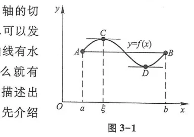
三、拉格朗日中值定理
如果在罗尔定理中去掉“端点函数值相等”这一限制，便得到微积分中最为重要的核心定理之一——拉格朗日中值定理.
如果函数 $f(x)$ 满足条件：
- 在闭区间 $[a, b]$ 上连续；
- 在开区间 $(a, b)$ 内可导；
那么在开区间 $(a, b)$ 内至少存在一点 $\xi \in (a, b)$，使得：
$$f(b) - f(a) = f'(\xi)(b - a) \quad \text{或} \quad \frac{f(b) - f(a)}{b - a} = f'(\xi)$$
几何意义：如图 3-2 所示，在满足条件的连续光滑曲线弧 $AB$ 上，至少存在一点 $C(\xi, f(\xi))$，该点处的切线平行于弦线 $AB$（切线斜率等于连接端点割线的斜率）.
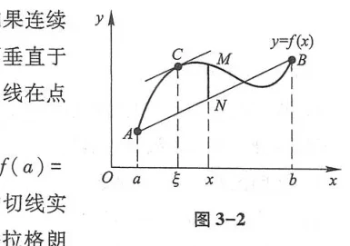
有限增量公式：若记 $a = x_0, b = x_0 + \Delta x$，则存在 $\theta \in (0, 1)$，使得 $\Delta y = f(x_0 + \Delta x) - f(x_0) = f'(x_0 + \theta\Delta x)\Delta x$. 这给出了函数改变量的精确表达式.
四、柯西中值定理
如果函数 $f(x)$ 及 $F(x)$ 满足：
- 在闭区间 $[a, b]$ 上连续；
- 在开区间 $(a, b)$ 内可导；
- 对任一 $x \in (a, b)$，都有 $F'(x) \ne 0$；
那么在开区间 $(a, b)$ 内至少存在一点 $\xi \in (a, b)$，使得：
$$\frac{f(b) - f(a)}{F(b) - F(a)} = \frac{f'(\xi)}{F'(\xi)}$$
第二节 洛必达法则
在求极限时，经常会遇到分式函数分子分母同时趋于零（$\frac{0}{0}$ 型）或同时趋于无穷大（$\frac{\infty}{\infty}$ 型）的情形. 柯西中值定理为解决这类“未定型”极限提供了极其简捷有效的方法——洛必达法则.
设：
- 当 $x \to x_0$ 时，函数 $f(x)$ 及 $g(x)$ 都趋于零：$\lim f(x) = 0, \lim g(x) = 0$；
- 在点 $x_0$ 的去心邻域内，$f'(x)$ 及 $g'(x)$ 都存在，且 $g'(x) \ne 0$；
- 极限 $\lim_{x \to x_0} \frac{f'(x)}{g'(x)}$ 存在（或为无穷大）；
则比值的极限存在且等于导数比值的极限：
$$\lim_{x \to x_0} \frac{f(x)}{g(x)} = \lim_{x \to x_0} \frac{f'(x)}{g'(x)}$$
类似法则同样适用于 $x \to \infty$ 以及单侧极限 $x \to x_0^\pm$，并且对 $\frac{\infty}{\infty}$ 型未定型同样完全成立.
- 前提验证：每次求导前必须严格验证是否属于 $\frac{0}{0}$ 或 $\frac{\infty}{\infty}$ 型未定型，非未定型绝不能应用！
- 其他未定型转化：
- $0 \cdot \infty$ 型：通过倒数变形化为 $\frac{0}{1/\infty} = \frac{0}{0}$ 或 $\frac{\infty}{1/0} = \frac{\infty}{\infty}$；
- $\infty - \infty$ 型：通过通分或有理化化为分式；
- $0^0, 1^\infty, \infty^0$ 型：通过取对数化为 $0 \cdot \infty$ 型求解.
- 失效情形：如果 $\lim \frac{f'(x)}{g'(x)}$ 呈现周期性振荡而不存在（例如 $\lim_{x \to \infty} \frac{x + \sin x}{x}$，导数之比为 $1 + \cos x$ 不收敛），洛必达法则失效，但原极限依然可以由其他方法（如夹逼准则或分子分母同除以 $x$）求得.
第三节 泰勒公式
多项式函数是最简单、计算最方便的一类函数. 微分 $dy = f'(x_0)\Delta x$ 实现了用一次多项式局部近似函数. 为了提高精度并考察误差，需要用更高次数的多项式逼近函数，这便是泰勒公式（Taylor's Formula）.
如果函数 $f(x)$ 在含 $x_0$ 的某个开区间 $(a, b)$ 内具有直到 $n+1$ 阶的导数，则对任一 $x \in (a, b)$，有：
$$f(x) = f(x_0) + f'(x_0)(x - x_0) + \frac{f''(x_0)}{2!}(x - x_0)^2 + \dots + \frac{f^{(n)}(x_0)}{n!}(x - x_0)^n + R_n(x)$$
其中误差余项有两种常用形式：
- 拉格朗日余项：$R_n(x) = \frac{f^{(n+1)}(\xi)}{(n+1)!}(x - x_0)^{n+1}$，其中 $\xi$ 介于 $x_0$ 与 $x$ 之间；
- 佩亚诺余项：$R_n(x) = o((x - x_0)^n)$，常用于求极限与局部性质分析.
当 $x_0 = 0$ 时的泰勒公式称为麦克劳林公式（Maclaurin's Formula）. 常用基本初等函数的麦克劳林展开式（带佩亚诺余项）：
- $e^x = 1 + x + \frac{x^2}{2!} + \dots + \frac{x^n}{n!} + o(x^n)$
- $\sin x = x - \frac{x^3}{3!} + \frac{x^5}{5!} - \dots + (-1)^{m-1}\frac{x^{2m-1}}{(2m-1)!} + o(x^{2m})$
- $\cos x = 1 - \frac{x^2}{2!} + \frac{x^4}{4!} - \dots + (-1)^m \frac{x^{2m}}{(2m)!} + o(x^{2m+1})$
- $\ln(1 + x) = x - \frac{x^2}{2} + \frac{x^3}{3} - \dots + (-1)^{n-1}\frac{x^n}{n} + o(x^n)$
- $(1 + x)^\alpha = 1 + \alpha x + \frac{\alpha(\alpha - 1)}{2!} x^2 + \dots + \frac{\alpha(\alpha - 1)\dots(\alpha - n + 1)}{n!} x^n + o(x^n)$
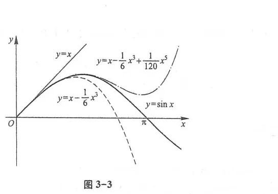
第四节 函数的单调性与曲线的凹凸性
一、函数单调性的判定法
设函数 $y = f(x)$ 在 $[a, b]$ 上连续，在 $(a, b)$ 内可导：
- 如果在 $(a, b)$ 内 $f'(x) > 0$，则 $f(x)$ 在 $[a, b]$ 上严格单调增加；
- 如果在 $(a, b)$ 内 $f'(x) < 0$，则 $f(x)$ 在 $[a, b]$ 上严格单调减少.
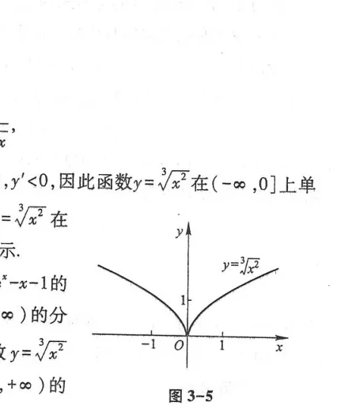
二、曲线的凹凸性与拐点
两条上升的曲线弧，其弯曲方向可能完全不同（图 3-6、图 3-7）. 如果曲线弧始终位于其上任一点切线的上方（即连接弧上任意两点的割线位于曲线弧的上方），称该曲线弧为凹的（Convex downwards）；反之若弧段位于其切线的下方，则称为凸的（Concave downwards），如图 3-8 所示.
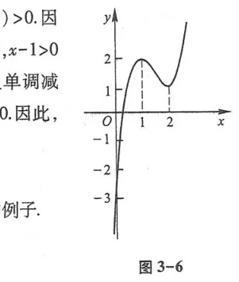
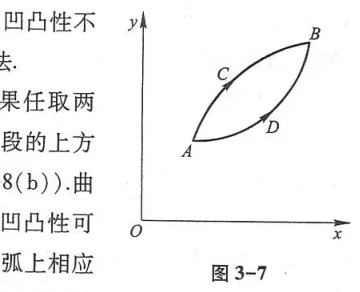
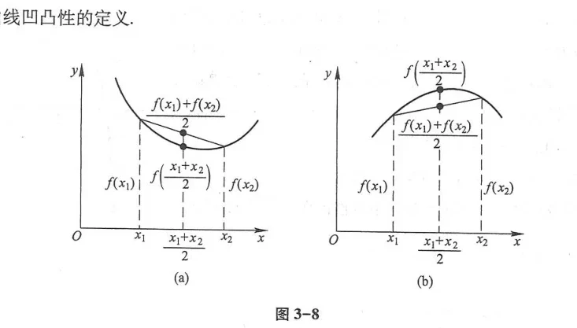
设函数 $f(x)$ 在 $[a, b]$ 上连续，在 $(a, b)$ 内具有二阶导数：
- 若在 $(a, b)$ 内 $f''(x) > 0$，则曲线 $y = f(x)$ 在 $[a, b]$ 上是凹的；
- 若在 $(a, b)$ 内 $f''(x) < 0$，则曲线 $y = f(x)$ 在 $[a, b]$ 上是凸的.
拐点定义：连续曲线凹弧与凸弧的连接分界点，称为曲线的拐点（Inflection Point）. 拐点横坐标 $x_0$ 处的必要条件是 $f''(x_0) = 0$ 或二阶导数不存在；充分条件是二阶导数在点 $x_0$ 的左右两侧异号.
第五节 函数的极值与最大值最小值
一、极值的判别法
函数的极大值点与极小值点统称为极值点. 极值只能在驻点（$f'(x) = 0$）或不可导点处取得（如图 3-9、图 3-10 所示）.
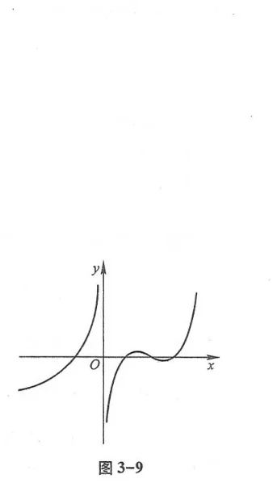
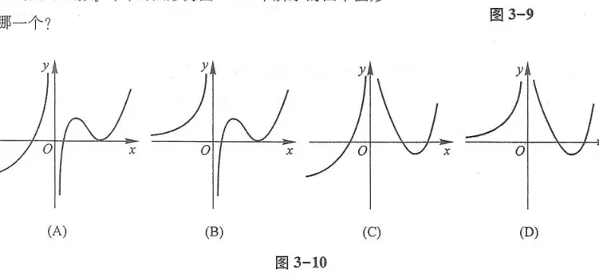
设 $f(x)$ 在 $x_0$ 的某邻域内连续，且在去心邻域内可导：
- 若当 $x$ 穿过 $x_0$ 时，$f'(x)$ 由正变负，则 $f(x_0)$ 为极大值；
- 若当 $x$ 穿过 $x_0$ 时，$f'(x)$ 由负变正，则 $f(x_0)$ 为极小值；
- 若 $f'(x)$ 在两侧符号相同，则 $f(x_0)$ 不是极值.
设 $f(x)$ 在 $x_0$ 处具有二阶导数且 $f'(x_0) = 0$：
- 若 $f''(x_0) < 0$，则 $f(x_0)$ 为极大值；
- 若 $f''(x_0) > 0$，则 $f(x_0)$ 为极小值；
- 若 $f''(x_0) = 0$，此方法失效，需用第一充分条件或更高阶展开判定.
二、工程最优化与实际最值问题
在工程建筑、机械加工与运筹调度中，经常需要在一定约束条件下确定最优几何尺寸、最低施工成本或最高输出效率. 下图展示了教材中经典的实际建模案例（图 3-11 至图 3-23）：
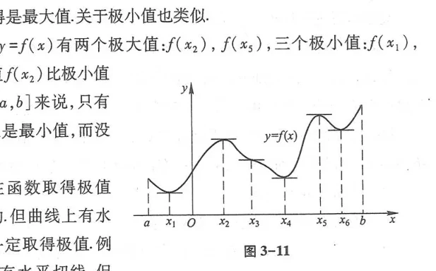
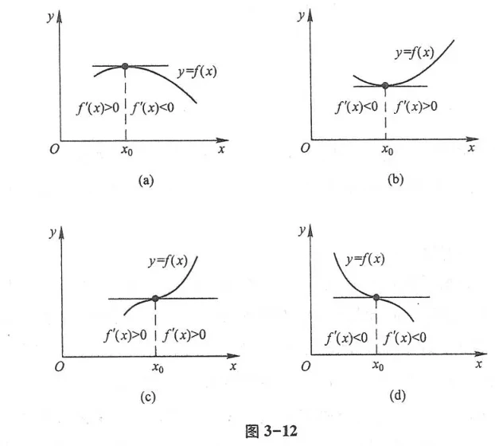
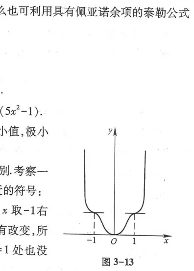
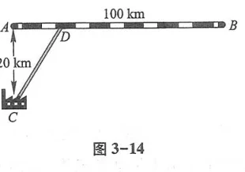
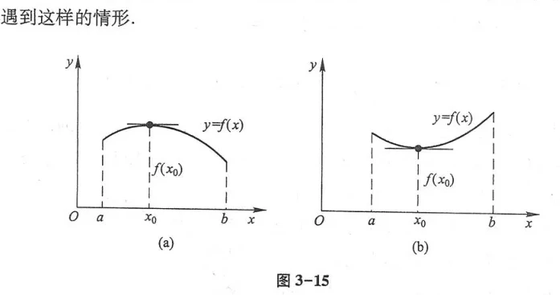
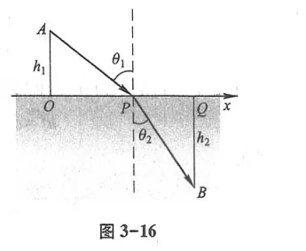
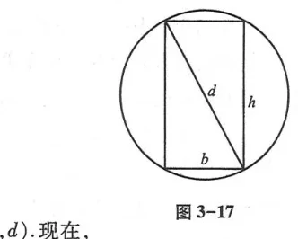
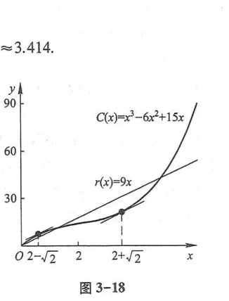
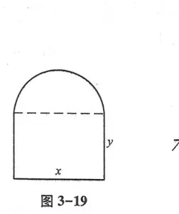
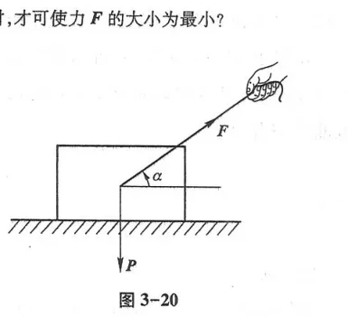
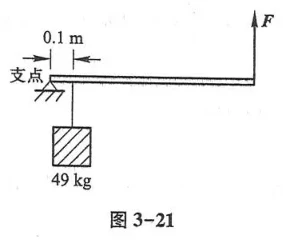
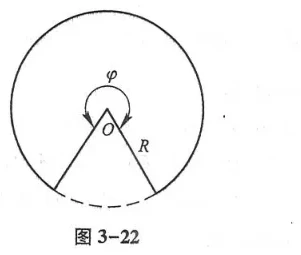
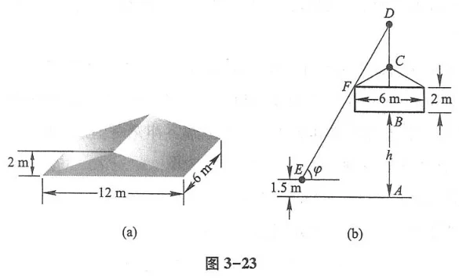
第六节 函数图形的描绘
综合运用函数的奇偶性、周期性、单调区间、极值点、凹凸区间、拐点以及渐近线，可以描绘出函数的整体几何图形（如图 3-24 至图 3-26 所示）.
三种渐近线求法：
- 铅直渐近线：若 $\lim_{x \to x_0^\pm} f(x) = \infty$，则直线 $x = x_0$ 为铅直渐近线；
- 水平渐近线：若 $\lim_{x \to \infty} f(x) = c$，则直线 $y = c$ 为水平渐近线；
- 斜渐近线：若 $\lim_{x \to \infty} \frac{f(x)}{x} = a \ne 0$ 且 $\lim_{x \to \infty} [f(x) - ax] = b$，则直线 $y = ax + b$ 为斜渐近线.
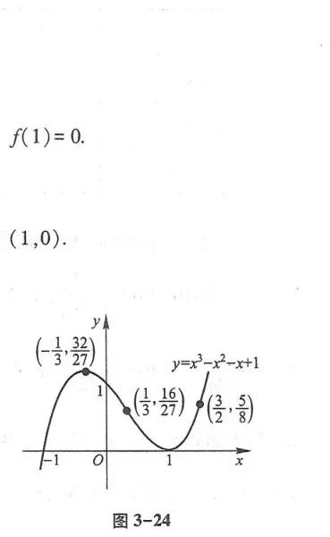
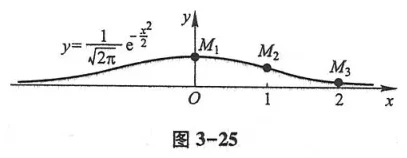
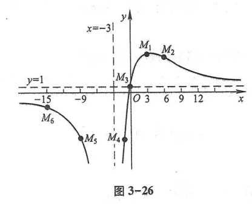
第七节 曲率
一、弧微分与曲率的定义
设曲线具有连续一阶导数，弧长参数从点 $A$ 起算为 $s$. 弧微分公式（图 3-27、图 3-28）：
$$ds = \sqrt{dx^2 + dy^2} = \sqrt{1 + y'^2} dx$$
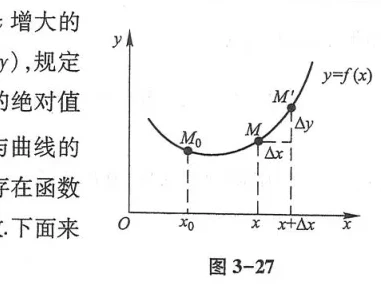
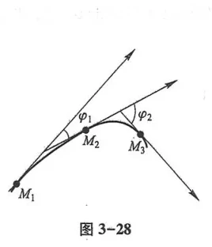
曲率（Curvature）用来刻画曲线弯曲程度的剧烈程度. 设动点沿曲线移动 $\Delta s$ 时，切线倾角的改变量为 $\Delta\alpha$（图 3-29、图 3-30）. 弧段的平均曲率为 $\bar{K} = \left|\frac{\Delta\alpha}{\Delta s}\right|$；当 $\Delta s \to 0$ 时的极限定义为点处的曲率：
$$K = \lim_{\Delta s \to 0} \left|\frac{\Delta\alpha}{\Delta s}\right| = \left|\frac{d\alpha}{ds}\right|$$
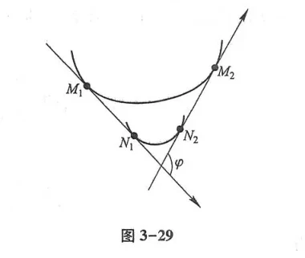
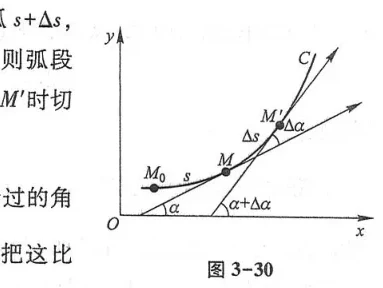
二、曲率的计算公式与曲率圆
由 $\tan\alpha = y'$，得 $\alpha = \arctan y'$，微分得 $d\alpha = \frac{y''}{1 + y'^2} dx$. 代入 $ds = \sqrt{1 + y'^2} dx$，得到显式方程曲率计算公式：
$$K = \frac{|y''|}{(1 + y'^2)^{3/2}}$$
曲率倒数 $\rho = \frac{1}{K}$ 称为曲率半径（Radius of Curvature）. 在曲线凹侧沿法线方向取距离为 $\rho$ 的点 $C$ 为圆心，以 $\rho$ 为半径作圆，称为曲线在该点处的曲率圆（Osculating Circle），圆心 $C$ 称为曲率中心（图 3-31 至图 3-37）.
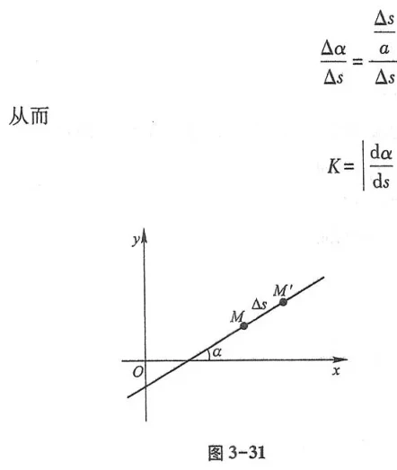
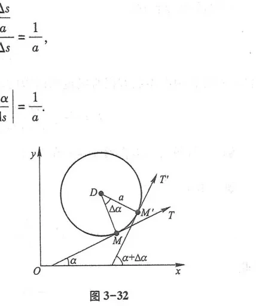
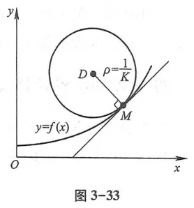
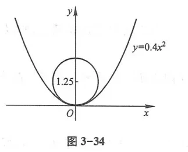
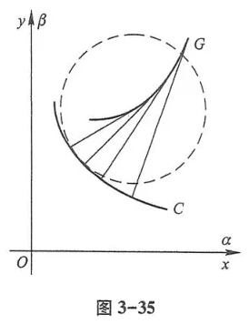
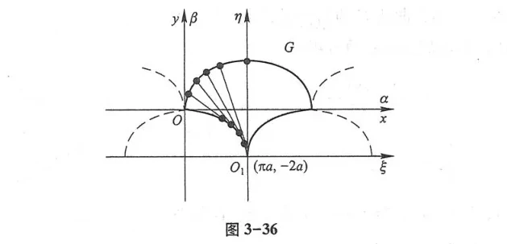
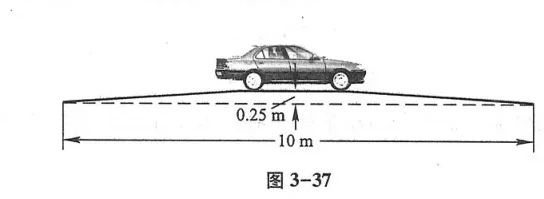
第八节 方程的近似解
在工程实际中，大量非线性超越方程 $f(x) = 0$ 无法求出精确的代数解析根. 必须采用数值算法求解根的近似值.
一、二分法
若连续函数 $f(x)$ 在区间 $[a, b]$ 端点异号：$f(a)f(b) < 0$，由零点定理必有实根（图 3-38）. 取中点 $c = \frac{a + b}{2}$，每次将区间缩小一半，经过 $n$ 次二分，误差不超过 $\frac{b - a}{2^n}$.
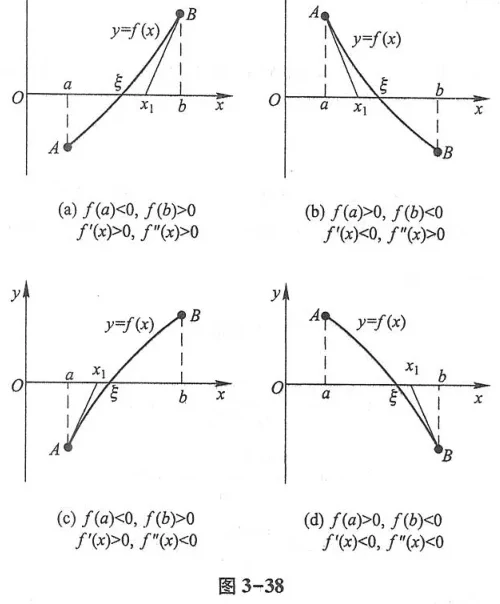
二、牛顿切线法
切线法核心思想：用曲线切线的零点近似曲线本身的零点（图 3-39、图 3-40）. 设初始近似根为 $x_0$，曲线在点 $(x_0, f(x_0))$ 处的切线方程为：
$$y - f(x_0) = f'(x_0)(x - x_0)$$
令 $y = 0$，解得切线与 $x$ 轴的交点作为第一次修正值 $x_1$：
$$x_1 = x_0 - \frac{f(x_0)}{f'(x_0)}$$
重复此过程，得到牛顿切线法迭代递推公式：
$$x_{n+1} = x_n - \frac{f(x_n)}{f'(x_n)} \quad (n = 0, 1, 2, \dots)$$
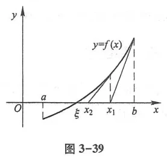
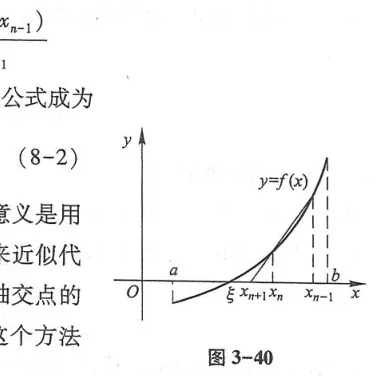
总习题三
1. 证明不等式：当 $x > 0$ 时，$\frac{x}{1 + x} < \ln(1 + x) < x$.
证：设 $f(t) = \ln(1 + t)$. 在闭区间 $[0, x]$ 上应用拉格朗日中值定理，存在 $\xi \in (0, x)$ 使得 $\frac{\ln(1 + x) - \ln 1}{x - 0} = \frac{1}{1 + \xi}$. 因为 $0 < \xi < x$，所以 $\frac{1}{1 + x} < \frac{1}{1 + \xi} < 1$. 两边乘以 $x > 0$，即得证.
2. 求极限：$\lim_{x \to 0} \frac{\cos x - e^{-\frac{x^2}{2}}}{x^4}$.
解：应用麦克劳林公式展开到 $x^4$ 项：
$\cos x = 1 - \frac{x^2}{2} + \frac{x^4}{24} + o(x^4)$；
$e^{-\frac{x^2}{2}} = 1 + \left(-\frac{x^2}{2}\right) + \frac{1}{2}\left(-\frac{x^2}{2}\right)^2 + o(x^4) = 1 - \frac{x^2}{2} + \frac{x^4}{8} + o(x^4)$.
分子 $= \left(\frac{1}{24} - \frac{1}{8}\right)x^4 + o(x^4) = -\frac{1}{12}x^4 + o(x^4)$.
故原极限 $= \lim_{x \to 0} \frac{-\frac{1}{12}x^4 + o(x^4)}{x^4} = -\frac{1}{12}$.
3. 设抛物线 $y = x^2$，求其在顶点 $(0, 0)$ 处的曲率 $K$ 及曲率圆方程.
解：$y' = 2x, y'' = 2$. 在原点 $(0, 0)$ 处：$y'(0) = 0, y''(0) = 2$.
曲率 $K = \frac{|y''|}{(1 + y'^2)^{3/2}} = \frac{2}{(1 + 0)^{3/2}} = 2$.
曲率半径 $\rho = \frac{1}{K} = \frac{1}{2}$. 曲率中心在法线上（$y$ 轴正方向），坐标为 $(0, \frac{1}{2})$.
曲率圆方程为：$x^2 + \left(y - \frac{1}{2}\right)^2 = \frac{1}{4}$.